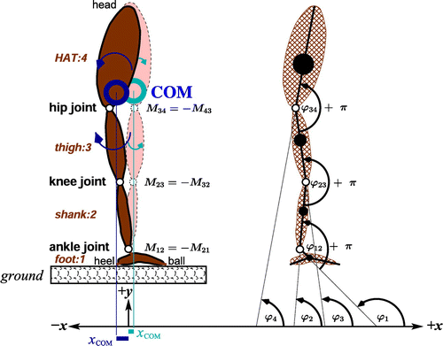

A Convergent Argument from Bernstein to the Inverted Pendulum
The standing human body is a kinematic chain of articulated segments with multiple rotational degrees of freedom at each joint (Günther & Wagner, 2016). A triple inverted pendulum on a cart is a kinematic chain of three articulated links and one translational base. Both systems are underactuated, nonlinear, and unstable. Both must remain upright through some combination of internal coordination and reactive coupling with their environment. Bernstein (1967) called this the degrees-of-freedom problem and posed it as the central problem of motor coordination: how does a system with redundant peripheral degrees of freedom converge on functional behavior without an executive subsystem capable of specifying every joint angle in advance? This essay argues that the answer Bernstein required is the answer this semester's readings have been converging on, that the convergence is the appropriate ground for a personal theoretical orientation, and that the inverted pendulum is the contemporary engineering exhibit of that convergence.

Thelen and Smith (1994) opened A Dynamic Systems Approach to the Development of Cognition and Action with a developmental puzzle that no single-cause account could resolve. Newborn stepping disappears around two months and reappears upon independent walking near the end of the first year. The standard maturationist explanation attributed the disappearance to cortical inhibition of a brainstem reflex, followed by cortical control. The empirical record refutes the account. Stepping persists supine after it has vanished upright. Submersion in water restores stepping in infants who no longer step in air. Weight gain predicts decline. Treadmills produce coordinated alternating stepping in seven-month-olds who do not step on their own. The pattern of evidence is inconsistent with a single neural cause and consistent with a coordination problem whose solution depends on the coupled dynamics of muscle, mass, posture, and surface (Thelen & Smith, 1994, Ch. 1).
Goldinger et al. (2016) applied the same explanatory standard to embodied cognition and reached a parallel verdict. The framework as ordinarily stated was vague at the level of definition, promiscuous at the level of method, and unable to generate formal models that distinguish embodied predictions from non-embodied alternatives. Marcus (2001, 2018) has run the structurally similar argument against eliminative connectionism for two decades. Architectures that fail systematic out-of-distribution generalization are not adequate explanations of cognition regardless of how impressive their in-distribution behavior appears. The methodological lesson is symmetric. Adequate explanation requires formal specification, falsifiable predictions, and behavior accounted for at the level it actually unfolds.
Kugler, Kelso, and Turvey (1980) articulated the constructive answer Bernstein required under the framework of coordinative structures and dissipative dynamics. Coordination, on this view, is not the imposition of a stored solution onto a passive periphery. It is the soft assembly of behavior from available biomechanical and neural components, under the constraints of the task and the environment, governed by the same self-organizing principles that produce coherent structure in non-equilibrium physical systems. Thelen and Smith (1994) operationalized soft assembly across a developmental program. Reaching, stepping, and the A-not-B error (Thelen et al., 2001) became trajectories of a coupled brain–body–environment system through a state space whose stable behaviors are attractors and whose qualitative transitions are bifurcations.
Gleick (1987) supplied the mathematics that licenses the vocabulary. Lorenz's discovery that simple deterministic equations could generate aperiodic, sensitively-dependent trajectories, May's logistic map and its period-doubling cascade, and Feigenbaum's universality constants together established that the structure of nonlinear dynamics is substrate-independent. The same attractor geometry that organizes fluid convection organizes infant reaching. The claim is not analogical. It is the formal observation that systems of sufficient nonlinearity converge on a small family of dynamical regimes regardless of their physical realization (Lorenz, 1963).
West (2017) extended the argument across orders of magnitude. The quarter-power scaling laws that govern metabolic rate across mammalian body sizes derive not from properties of any single organ but from the optimization of space-filling, hierarchical distribution networks under three principles, none of which are stored anywhere in the system. The same network logic generates superlinear scaling in cities and finite-time singularities in unbounded growth. Macro-level regularities emerge from the local-rule-following interactions of many components. Anderson (1972) made the case for this kind of explanation in physics: at each level of organization, new properties appear that cannot be deduced from the properties of the level below, and the methods adequate for one level fail at the next. Reductionism, as a research program, does not entail constructionism, the inverse claim that knowledge of fundamental laws permits reconstruction of higher-level phenomena. The whole is not only different from the sum of the parts; the whole requires its own explanatory vocabulary.
Goldstein (1999) dissolved the philosophical objection that has dogged this kind of explanation since Anderson (1972). Following Bedau's (1997) account of weak emergence and the taxonomy later refined by Chalmers (2006), Goldstein argued that emergence is metaphysically modest, compatible with physicalism, and scientifically indispensable. A property is weakly emergent when it can be derived from an underlying mechanism only by simulation or observation, not by analytic reduction. Macro-level explanations of weakly emergent phenomena do work that micro-level explanations cannot do, even when the micro-level is causally complete. Favela and Amon (2023) extended the resolution back into cognitive science, arguing that ecological psychology and complexity science share the same explanatory commitments and that the methodological tools of complexity science (recurrence analysis, fractal dimension, multi-scale entropy) provide the formal apparatus that ecological psychology had previously lacked.
Chemero (2003, 2009) supplied the ontology. An agent and its environment are one coupled dynamical system. Affordances are relations between organism and environment, not features of either alone. Cognition, on this account, is the trajectory of the coupled system through state space.
The convergence is not a victory for radical dynamicism. Marcus (2001, 2018) has continued to identify a constraint that the dynamical literature cannot wave away. Systems that produce reliable, generalizing behavior across novel inputs require functional internal structure, that is, parameter settings, learned weights, and organized state spaces that can be inspected, learned, and falsified. Even van Gelder's (1995) Watt governor, the canonical exemplar of the dynamical hypothesis, was argued by Eliasmith (1997) and Bechtel (1998) to be too simple to bear the explanatory weight that ecological dynamicism placed on it. The mature position is therefore a hybrid. The dynamical apparatus is correct about the level at which behavior unfolds and the geometry that organizes it. The structuralist apparatus is correct that adequate explanation of generalization requires functional internal organization. Internal organization and coupled dynamics are levels of description of one system, not competing ontologies.
My theoretical orientation is a hybrid model in this sense. Cognition is the trajectory of a coupled brain–body–environment system, governed by attractors and constrained by control parameters, whose internal organization is functionally specifiable and falsifiable. The Inha University inverted pendulum is the working engineering exhibit. A neural controller trained by reinforcement learning recovers the pendulum to its setpoints under perturbation through real-time sensorimotor coupling, while its weights constitute the structured internal organization the recovery requires (Baek et al., 2024). My thesis work applies the framework to human exploration–exploitation behavior under threat to employment, with dynamical dependent variables, intolerance for ambiguity as a moderator, and an agent-based model whose predictions are calibrated against human behavioral data and open to falsification.
Anderson, P. W. (1972). More is different. Science, 177(4047), 393–396. https://doi.org/10.1126/science.177.4047.393
Baek, J., Lee, C., Lee, Y. S., Jeon, S., & Han, S. (2024). Reinforcement learning to achieve real-time control of triple inverted pendulum. Engineering Applications of Artificial Intelligence, 128, 107518. https://doi.org/10.1016/j.engappai.2023.107518
Bechtel, W. (1998). Representations and cognitive explanations: Assessing the dynamicist's challenge in cognitive science. Cognitive Science, 22(3), 295–318. https://doi.org/10.1207/s15516709cog2203_2
Bedau, M. A. (1997). Weak emergence. Philosophical Perspectives, 11, 375–399. https://doi.org/10.1111/0029-4624.31.s11.17
Bernstein, N. A. (1967). The co-ordination and regulation of movements. Pergamon Press.
Chalmers, D. J. (2006). Strong and weak emergence. In P. Clayton & P. Davies (Eds.), The re-emergence of emergence (pp. 244–254). Oxford University Press.
Chemero, A. (2003). An outline of a theory of affordances. Ecological Psychology, 15(2), 181–195. https://doi.org/10.1207/S15326969ECO1502_5
Chemero, A. (2009). Radical embodied cognitive science. MIT Press.
Eliasmith, C. (1997). Computation and dynamical models of mind. Minds and Machines, 7(4), 531–541. https://doi.org/10.1023/A:1008296514437
Favela, L. H., & Amon, M. J. (2023). Reframing cognitive science as a complexity science. Cognitive Science, 47(4), e13280. https://doi.org/10.1111/cogs.13280
Gleick, J. (1987). Chaos: Making a new science. Viking.
Goldinger, S. D., Papesh, M. H., Barnhart, A. S., Hansen, W. A., & Hout, M. C. (2016). The poverty of embodied cognition. Psychonomic Bulletin & Review, 23(4), 959–978. https://doi.org/10.3758/s13423-015-0860-1
Goldstein, J. (1999). Emergence as a construct: History and issues. Emergence, 1(1), 49–72. https://doi.org/10.1207/s15327000em0101_4
Günther, M., & Wagner, H. (2016). Dynamics of quiet human stance: Computer simulations of a triple inverted pendulum model. Computer Methods in Biomechanics and Biomedical Engineering, 19(8), 819–834. https://doi.org/10.1080/10255842.2015.1067306
Kugler, P. N., Kelso, J. A. S., & Turvey, M. T. (1980). On the concept of coordinative structures as dissipative structures: I. Theoretical lines of convergence. In G. E. Stelmach & J. Requin (Eds.), Tutorials in motor behavior (pp. 3–47). North-Holland.
Lorenz, E. N. (1963). Deterministic nonperiodic flow. Journal of the Atmospheric Sciences, 20(2), 130–141. https://doi.org/10.1175/1520-0469(1963)020<0130:DNF>2.0.CO;2
Marcus, G. F. (2001). The algebraic mind: Integrating connectionism and cognitive science. MIT Press.
Marcus, G. (2018). Deep learning: A critical appraisal. arXiv. https://doi.org/10.48550/arXiv.1801.00631
Thelen, E., & Smith, L. B. (1994). A dynamic systems approach to the development of cognition and action. MIT Press.
Thelen, E., Schöner, G., Scheier, C., & Smith, L. B. (2001). The dynamics of embodiment: A field theory of infant perseverative reaching. Behavioral and Brain Sciences, 24(1), 1–34. https://doi.org/10.1017/S0140525X01003910
van Gelder, T. (1995). What might cognition be, if not computation? The Journal of Philosophy, 92(7), 345–381. https://doi.org/10.2307/2941061
West, G. B. (2017). Scale: The universal laws of growth, innovation, sustainability, and the pace of life in organisms, cities, economies, and companies. Penguin.